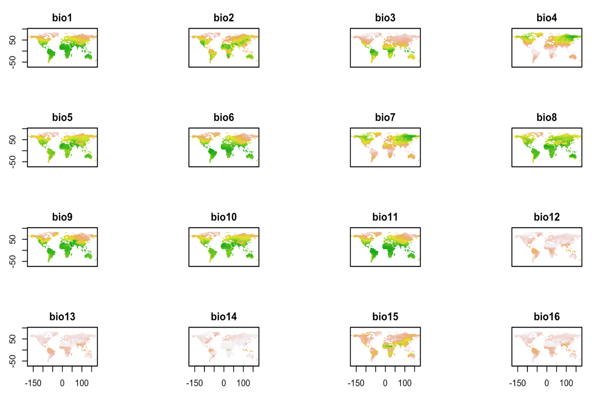
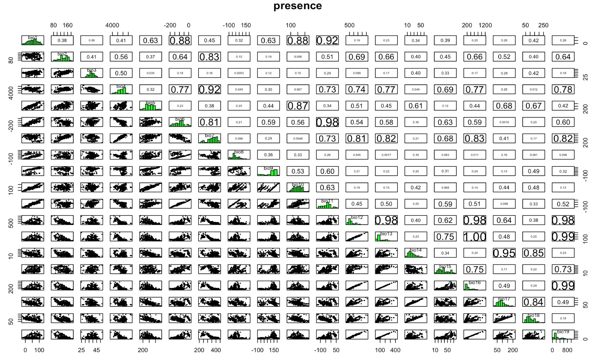
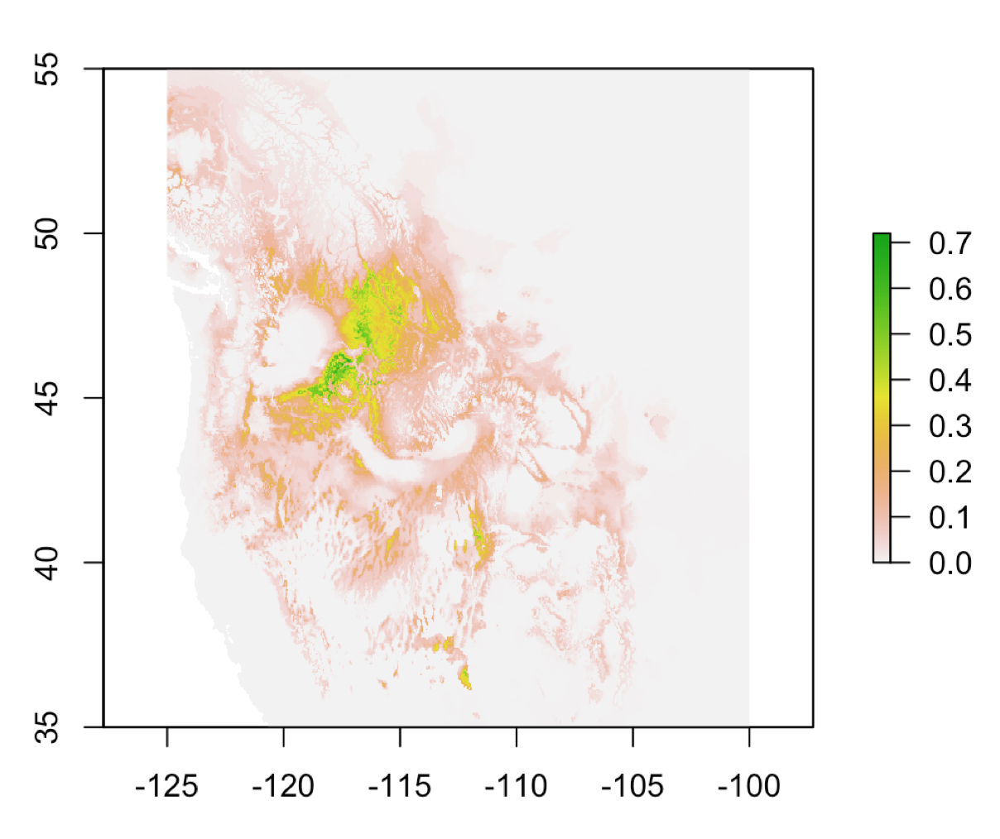

3.4 Work with Models
Packages functionality from rgeos,raster,rgdal,terra packages are included in {sf},and {dismo} so we don’t need to load them.
library(dismo) # for modelingHere we use wrld_simpl data from {maptools}, to be able to use the plot() function faster, you can install the package or load it because data is included in the /data folder as .RData format. We can load the data/case_study_1.RData to load all the data we need for this workshop, this is already been done at the very beginning of this chapter. In case you’d like to do that separately, just type: load("data/case_study_1.RData") and all data will be loaded in the global environment
world <- map_data("world")
gbi_coords<- tibble(x=do_gbif2$longitude,y=do_gbif2$latitude)
ggplot(world)+
geom_polygon(aes(long,lat,group=group),fill="grey90",color="grey30") +
geom_polygon(data=states, aes(long,lat,group=group),color="grey40") +
geom_point(data = gbi_coords, aes(x,y),
color="pink") +
coord_sf(xlim=c(-125,-90),ylim=c(35,65))+
ggthemes::theme_map()This is a raster stack composed of 19 raster layers.
frogs <-data.frame(long=do_gbif2$longitude,lat=do_gbif2$latitude)
climate <- dismo::getData("worldclim",download = T,var="bio",res=2.5)
plot(climate,legend=FALSE)
frog_climate <- extract(climate,frogs)frog_climate %>% head(3) bio1 bio2 bio3 bio4 bio5 bio6 bio7 bio8 bio9 bio10 bio11 bio12 bio13 bio14
[1,] 100 85 34 5669 237 -11 248 32 171 171 27 1737 248 53
[2,] 72 88 33 6123 220 -43 263 1 151 151 -4 1514 225 47
[3,] 59 83 35 5268 194 -40 234 1 127 129 -3 1731 258 49
bio15 bio16 bio17 bio18 bio19
[1,] 48 731 184 184 667
[2,] 50 656 161 161 599
[3,] 50 749 178 195 687Apply the Bioclim algorithm used for species distribution modeling, the classic climate-envelope-model. It computes the similarity of a location by comparing the values of environmental variables at any location to a percentile distribution of the values at known locations of occurrence. More info here: ?dismo::bioclim
We use the pairs(x, v=NULL, pa='pa', hist=TRUE, cor=TRUE) function to plot the results of the model, with options from the {dismo} package.
require(dismo)
bioclim.mod <- dismo::bioclim(frog_climate)pairs(bioclim.mod,pa="pa")
Now, let’s build a stack with the stack() function, including all the bioclimatic layers from the original raster stack.
doParallel::registerDoParallel()
predictors <- stack(climate$bio1,climate$bio2,climate$bio3,
climate$bio4,climate$bio5,
climate$bio6,climate$bio7,climate$bio8,
climate$bio9,climate$bio10,climate$bio11,
climate$bio12,climate$bio13,climate$bio14,
climate$bio15,climate$bio16,climate$bio17,
climate$bio18,climate$bio19)
predictions <- predict(predictors,bioclim.mod)plot(predictions,xlim=c(-125,-100),ylim=c(35,55),axes=T)